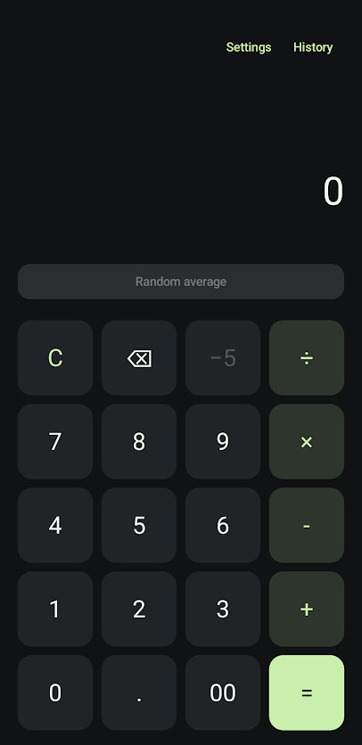

Culator v2.0 is a native android version of the culator web app. It was 100% vibe-coded and took 0% human creativity to create.
Fun facts:

* This is a rough estimate based on the average energy consumption of large language models. The actual energy consumption may vary depending on the specific model and hardware used.
** This is a rough estimate based on the average water consumption of large datacenters. The actual water consumption may vary depending on the specific datacenter and cooling methods used.
*** This asterisk wasn't necessary. I just wanted to reiterate my shame.